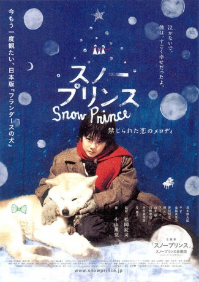

#7033 Der Schneeprinz
Alternativ: Snow Prince (Englischer Titel)
 
 IMDB-Wertung: 7.2 / 10
IMDB-Wertung: 7.2 / 10  Metascore: 0
Metascore: 0 
Nur wer Schulgeld bezahlen kann, darf im Jahr 1936 in Japan am Unterricht teilnehmen. Für den 10jährigen Waisenjungen Sota bleibt das ein Traum. Er und sein Großvater sind arm und werden nicht einmal jeden Tag satt. Dabei würde Sato so gerne Maler werden. Um malen zu können, hungert er sogar, damit Geld übrig bleibt für Papier und Farbe.
Jahr: 2009
Dauer: 115 Minuten
FSK: 6
Land: Japan Studio: New KSMTonspuren:
Untertitel: Deutsch,
Auflösung: 1080p (1920x800) Größe: 4096 MB
Genre: Drama
Regisseur: Joji Matsuoka
Drehbuch: Kundô Koyama
Soundtrack:
Darsteller:
Datei: X:\HD-Eastern-Modern(N-Z)\Schneeprinz, Der (2009, FSK6, 1920x800).mkv seit 18.09.2017
Festplatte: HD Eastern+Western
 Es gibt insgesamt 76 Filme in der Gruppe 'HD-Eastern-Modern(N-Z)'
Es gibt insgesamt 76 Filme in der Gruppe 'HD-Eastern-Modern(N-Z)'